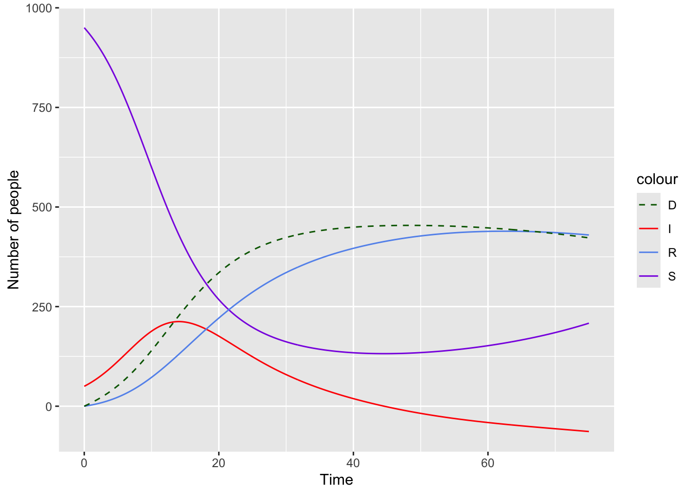
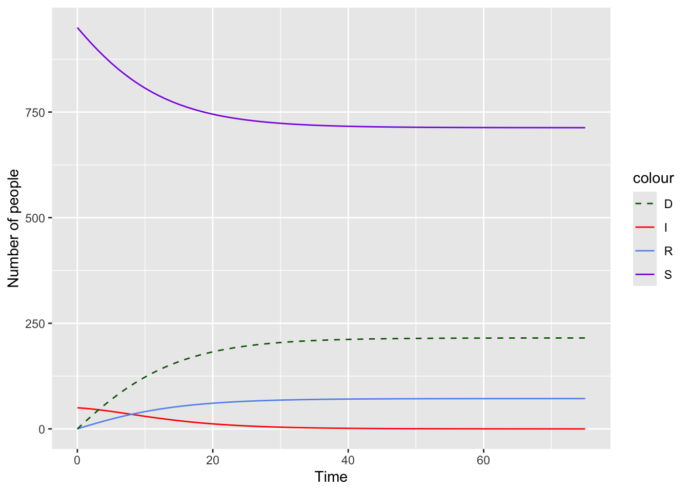

# install.packages(
# "odin2",
# repos = c("https://mrc-ide.r-universe.dev", "https://cloud.r-project.org"))
library(odin2)
library(dust2)
library(deSolve)
library(magrittr)
library(ggplot2)
library(dplyr)Test competing risks
Proposed formulation
Consider a XYZW model where:
Y->Z and Y->W are competitive risks
Maximum wait time for Y->Z (Y->W) is n (m)
\(n \geq m\) (maximum dwell time of Y->Z is greater than that of Y->W)
New probability distribution for Y
\[ b_i = \frac{z' p_i + (1 - z) q_i}{\sum^m_j(z'p_j + (1-z)q_j)} \]
Where
z is the proportion of people that ends up in Z at equilibrium \(z = \frac{Z}{Z + W}\)
z’ is the proportion of people that ultimately ending up in Z and stays in Y up to m time steps. \[ z' = z\frac{\sum_{j=1}^m p_j}{\sum_{k=1}^n p_k} \]
Adjustment for z’ formulation
z’ originally defined as \(z' = \frac{\sum_{j=1}^m zp_j}{\sum_{k=1}^n zp_k} = \frac{\sum_{j=1}^m p_j}{\sum_{k=1}^n p_k}\)
Which is the proportion of people that stays in Y up to m steps, given that they transitioned to Z (i.e. \(P(\text{dwell time} \leq m |Z)\) while we need \(P(\text{dwell time} \leq m,Z)\)
Issue with current formulation for \(b_i\)
By normalizing \(b_i\) (divide by \(\sum^m_j(z'p_j + (1-z)q_j)\)), \(\sum^{m}_{j=1}b_j\) is equal to 1 which means \(\sum^{n}_{j=1}b_j \geq 1\)
While sum of the dwell time distribution must be 1
Adjustment: test both scenarios where normalization (Section 3.1) is applied and is not applied (Section 3.3)
Outgoing rate from \(Y_i\) to \(Y_{i+1}\) is then computed by
\[ 1 - \sum_{j=1}^i {b_j} \]
Outgoing rate from \(Y_i\) to Z and W is \[ \delta_i = \frac{b_i}{1 - \sum_{j=1}^{i-1} {b_j}} \] Where:
\(\frac{z'p_i}{z'p_i + (1-z)q_i} \delta_i\) goes to Z.
\(\frac{(1-z)q_i}{z'p_i + (1-z)q_i} \delta_i\) goes to W.
How the current formulation may equates to multinomial when n=m
Consider the scenario where \(n = m\)
\[ b_i = \frac{zp_i + (1-z)q_i}{\sum_{j=1}^m(zp_j + (1-z)q_j)} \]
Since \(\sum(zp_j + (1-z)q_j)\) can be rewritten as \(z\sum p_j + (1-z)\sum q_j\) which equates to 1
\[ b_i = zp_i + (1-z)q_i \]
Out transition from \(Y_i\) to Z is then \[ \frac{zp_i}{zp_i + (1-z)q_i} * \frac{b_i}{1 - \sum_{j=1}^{i} b_j} \\ = \frac{zp_i}{b_i} * \frac{b_i}{1 - \sum_{j=1}^{i} b_j} \\ = \frac{zp_i}{1 - \sum_{j=1}^{i} b_j} \] Out population from \(Y_i\) to Z is then \[ n_i*\frac{zp_i}{1 - \sum_{j=1}^{i-1} b_j} \]
Recall that \(n_i = n_{i-1}*(1 - \sum_{j=1}^{i-1} b_j)\)
Outgoing population from \(Y_i\) to Z can then be rewritten as
\[ n_{i-1}*z*p_i \] Similarly, outgoing population population from \(Y_i\) to W can be written as \[ n_{i-1}*(1-z)*q_i \] Which is equivalent to having 2 sub-compartment chains, one for \(n_{i-1}*z\) and the other for \(n_{i-1}*(1-z)\).
Model and helper functions
Model implemented in odin
proposed algo implemented in odin
sird_mod <- odin2::odin(
{
# equivalent to mathexpr in denim
update(S) <- S - dt * S * beta * sum(I) / N
update(I[1]) <- dt * S * beta* sum(I)/N
update(I[2:r_maxtime]) <- I[i-1]*(1-transprob[i-1])
dim(I_to_R) <- r_maxtime
# equivalent to delta_i*z'*p_i/(z'*p_i + (1-z)*q_i)
I_to_R[1:r_maxtime] <- transprob[i]*I[i]*
(p_prime*r_dist[i])/(p_prime*r_dist[i] + (1-r_prob)*d_dist[i])
sum_I_to_R <- sum(I_to_R)
update(R) <- R + sum_I_to_R
dim(I_to_D) <- d_maxtime
# equivalent to delta_i*(1-z)*q_i/(z'*p_i + (1-z)*q_i)
I_to_D[1:d_maxtime] <- transprob[i]*I[i]*
(d_prob*d_dist[i])/(p_prime*r_dist[i] + (1-r_prob)*d_dist[i])
sum_I_to_D <- sum(I_to_D)
update(D) <- D + sum_I_to_D
# print("I to R {sum_I_to_R} I to D {sum_I_to_D}")
# initial population
initial(S) <- S_init
initial(I[]) <- I_init[i]
dim(I) <- r_maxtime
initial(R) <- R_init
initial(D) <- D_init
# ----- Inputs -------
beta <- parameter()
# dwell time distribution of r
r_dist <- parameter()
r_maxtime <- parameter()
r_prob <- parameter(0.5) # proportion that end up in R at equilibrium
dim(r_dist) <- r_maxtime
# dwell time distribution of d
d_dist <- parameter()
d_maxtime <- parameter()
d_prob <- parameter(0.5) # proportion that end up in D at equilibrium
dim(d_dist) <- d_maxtime
# parameter to control whether to normalize i_dist
normalize_dist <- parameter(TRUE, type="logical")
# initial populations
S_init <- parameter()
I_init <- parameter()
dim(I_init) <- r_maxtime
R_init <- parameter()
D_init <- parameter()
N <- parameter(1000)
# ----- Compute out transition here --------
# assume dwell time of r >= dwell time of d
# i_dist is the new dwell time distribution in I
dim(i_dist) <- r_maxtime
# prob of people that would end up in R and stay in I up to d_maxtime
# equivalent of z'
p_prime <- r_prob*sum(r_dist[1:d_maxtime])/sum(r_dist)
# distribution normalizer
dim(normalizer) <- d_maxtime
normalizer[] <- p_prime*r_dist[i] + (1-r_prob)*d_dist[i]
# Bug due to sum of i_dist end up greater than 1 when normalized
i_dist[1:d_maxtime] <- if (normalize_dist) (p_prime*r_dist[i] + d_prob*d_dist[i])/sum(normalizer)
else (p_prime*r_dist[i] + d_prob*d_dist[i])
# for i_dist at timestep > d_maxtime is just the probability distribution of I->R transition
i_dist[(d_maxtime+1):r_maxtime] <- (r_prob-p_prime)*r_dist[i]
# transition prob
dim(transprob) <- r_maxtime
transprob[1] <- i_dist[i]
transprob[2:r_maxtime] <- i_dist[i]/(1 - sum(i_dist[1:(i-1)]))
# browser(phase = "update", when = time<1)
}
)Helper functions
Function to compute transition probability
compute_trans_prob <- function(rate, timestep=0.05, error_tolerance=0.0001){
maxtime <- timestep
prev_prob <- 0
transprob <- numeric()
cumulative_dist <- numeric()
prob_dist <- numeric()
while(TRUE){
# get current cumulative prob
temp_prob <- if_else(
pexp(maxtime, rate = rate) < (1 - error_tolerance),
pexp(maxtime, rate = rate),
1);
cumulative_dist <- c(cumulative_dist, temp_prob)
# get current prob (pi)
curr_prob <- temp_prob - prev_prob
prob_dist <- c(prob_dist, curr_prob)
# get current transition prob
curr_transprob <- curr_prob/(1-prev_prob)
transprob <- c(transprob, curr_transprob)
prev_prob <- temp_prob
maxtime <- maxtime + timestep
if(temp_prob == 1){
break
}
}
data.frame(
prob_dist = prob_dist,
cumulative_dist = cumulative_dist,
transprob = transprob
)
}Helper function for plotting
plot_helper <- function(data){
data %>% ggplot() +
geom_line(aes(x = time, y = S, color = "S")) +
geom_line(aes(x = time, y = I, color = "I")) +
geom_line(aes(x = time, y = R, color = "R")) +
geom_line(aes(x = time, y = D, color = "D"), linetype = "dashed") +
scale_color_manual(
values = c("S" = "blueviolet", "I"="red", "R"="cornflowerblue", "D"="darkgreen")
) +
labs(
x = "Time",
y = "Number of people"
)
}Run model
simulationDuration <- 75
timestep <- 0.05Different maximum dwell time (with normalization)
Test scenario where maximum dwell time of R>D, normalization applied
Model config
mod1_config <- list(
rate = 0.1,
d_rate = 0.2,
beta = 0.4,
S = 950,
I = 50,
R = 0,
D = 0,
N = 1000
)Model set up
# generate discrete dwell time distribution for I -> R
r_dist <- compute_trans_prob(rate = mod1_config$rate, timestep = timestep)
r_dist <- r_dist$prob_dist
d_dist <- compute_trans_prob(rate = mod1_config$d_rate, timestep = timestep)
d_dist <- d_dist$prob_dist
odin_pars <- list(
beta = mod1_config$beta,
N = mod1_config$N,
r_dist = r_dist,
r_maxtime = length(r_dist),
d_dist = d_dist,
d_maxtime = length(d_dist),
S_init = mod1_config$S,
I_init = array( c(mod1_config$I, rep(0, length(r_dist)-1)) ),
R_init = mod1_config$R,
D_init = mod1_config$D,
normalize_dist=TRUE
)Run odin model
sird <- dust_system_create(sird_mod, odin_pars, dt = timestep)
dust_system_set_state_initial(sird)
t_seq <- seq(0, simulationDuration, 0.25)
out <- dust_system_simulate(sird, t_seq)
out <- dust_unpack_state(sird, out)
odin_result <- data.frame(
time = t_seq,
S = out$S,
I = colSums(out$I),
R = out$R,
D = out$D
)
plot_helper(odin_result)
Run deSolve model
transition_func <- function(t, state, param){
with(as.list( c(state, param) ), {
dS = - beta * S * I/N
dI = beta * S * I/N - rate*I - d_rate*I
dR = rate*I
# handle I -> D transition
dD = d_rate*I
list(c(dS, dI, dR, dD))
})
}
desolveInitialValues <- c(
S = mod1_config$S,
I = mod1_config$I,
R = mod1_config$R,
D = mod1_config$D
)
# ====== settings ========
parameters <- c(
beta = mod1_config$beta,
N = mod1_config$N,
rate = mod1_config$rate, # recovery rate
d_rate = mod1_config$d_rate # death rate
)
times <- seq(0, simulationDuration)
ode_mod <- ode(y = desolveInitialValues, times = times, parms = parameters, func = transition_func)
ode_mod <- as.data.frame(ode_mod)Plot output
plot_helper(ode_mod)
Same maximum dwell time in R and D
Run model with normalizing for \(b_i\), expect that this scenario to have the same output as multinomial
Model config
mod2_config <- list(
rate = 0.2,
d_rate = 0.2,
beta = 0.4,
S = 950,
I = 50,
R = 0,
D = 0,
N = 1000
)Model set up
# generate discrete dwell time distribution for I -> R
r_dist <- compute_trans_prob(rate = mod2_config$rate, timestep = timestep)
r_dist <- r_dist$prob_dist
# generate discrete dwell time distribution for I -> D
d_dist <- compute_trans_prob(rate = mod2_config$d_rate, timestep = timestep)
d_dist <- d_dist$prob_dist
odin_pars <- list(
beta = mod2_config$beta,
N = mod2_config$N,
r_dist = r_dist,
r_maxtime = length(r_dist),
d_dist = d_dist,
d_maxtime = length(d_dist),
S_init = mod2_config$S,
I_init = array( c(mod2_config$I, rep(0, length(r_dist)-1)) ),
R_init = mod2_config$R,
D_init = mod2_config$D
)Run odin model
sird <- dust_system_create(sird_mod, odin_pars, dt = timestep)
dust_system_set_state_initial(sird)
t_seq <- seq(0, simulationDuration, 0.5)
out <- dust_system_simulate(sird, t_seq)
out <- dust_unpack_state(sird, out)
odin_result <- data.frame(
time = t_seq,
S = out$S,
I = colSums(out$I),
R = out$R,
D = out$D
)
plot_helper(odin_result)
Run deSolve model
transition_func <- function(t, state, param){
with(as.list( c(state, param) ), {
dS = - beta * S * I/N
dI = beta * S * I/N - rate*I - d_rate*I
dR = rate*I
# handle I -> D transition
dD = d_rate*I
list(c(dS, dI, dR, dD))
})
}
desolveInitialValues <- c(
S = mod2_config$S,
I = mod2_config$I,
R = mod2_config$R,
D = mod2_config$D
)
# ====== settings ========
parameters <- c(
beta = mod2_config$beta,
N = mod2_config$N,
rate = mod2_config$rate, # recovery rate
d_rate = mod2_config$d_rate # death rate
)
times <- seq(0, simulationDuration)
ode_mod <- ode(y = desolveInitialValues, times = times, parms = parameters, func = transition_func)
ode_mod <- as.data.frame(ode_mod)Plot output
plot_helper(ode_mod)Run deSolve model
transition_func <- function(t, state, param){
with(as.list( c(state, param) ), {
dS = - beta * S * (IR + ID)/N
dIR = 0.5*beta * S * (IR + ID)/N - rate*IR
dID = 0.5*beta * S * (IR + ID)/N - d_rate*ID
dR = rate*IR
# handle I -> D transition
dD = d_rate*ID
list(c(dS, dIR, dID, dR, dD))
})
}
desolveInitialValues <- c(
S = mod2_config$S,
IR = 0.5*mod2_config$I,
ID = 0.5*mod2_config$I,
R = 0,
D = 0
)
# ====== settings ========
parameters <- c(
beta = mod2_config$beta,
N = mod2_config$N,
rate = mod2_config$rate, # recovery rate
d_rate = mod2_config$d_rate # death rate
)
times <- seq(0, simulationDuration)
ode_mod <- ode(y = desolveInitialValues, times = times, parms = parameters, func = transition_func)
ode_mod <- as.data.frame(ode_mod) %>%
mutate(I = ID + IR)Plot output
plot_helper(ode_mod)
Different maximum dwell time (no normalization)
Test scenario where maximum dwell time of R>D, normalization not applied, and proportion that goes to Z and W at equilibrium differs
Model config
mod3_config <- list(
rate = 0.2,
d_rate = 0.2,
beta = 0.4,
S = 950,
I = 50,
R = 0,
D = 0,
N = 1000,
r_prob = 0.3,
d_prob = 0.7
)Model set up
# generate discrete dwell time distribution for I -> R
r_dist <- compute_trans_prob(rate = mod3_config$rate, timestep = timestep)
r_dist <- r_dist$prob_dist
d_dist <- compute_trans_prob(rate = mod3_config$d_rate, timestep = timestep)
d_dist <- d_dist$prob_dist
odin_pars <- list(
beta = mod3_config$beta,
N = mod3_config$N,
r_dist = r_dist,
r_maxtime = length(r_dist),
r_prob = mod3_config$r_prob,
d_dist = d_dist,
d_maxtime = length(d_dist),
d_prob = mod3_config$d_prob,
S_init = mod3_config$S,
I_init = array( c(mod3_config$I, rep(0, length(r_dist)-1)) ),
R_init = mod3_config$R,
D_init = mod3_config$D,
normalize_dist = FALSE
)Run odin model
sird <- dust_system_create(sird_mod, odin_pars, dt = timestep)
dust_system_set_state_initial(sird)
t_seq <- seq(0, simulationDuration, 0.25)
out <- dust_system_simulate(sird, t_seq)
out <- dust_unpack_state(sird, out)
odin_result <- data.frame(
time = t_seq,
S = out$S,
I = colSums(out$I),
R = out$R,
D = out$D
)
plot_helper(odin_result)-1.png)
Run deSolve model
transition_func <- function(t, state, param){
with(as.list( c(state, param) ), {
dS = - beta * S * (IR + ID)/N
dIR = r_prob*beta * S * (IR + ID)/N - rate*IR
dID = d_prob*beta * S * (IR + ID)/N - d_rate*ID
dR = rate*IR
# handle I -> D transition
dD = d_rate*ID
list(c(dS, dIR, dID, dR, dD))
})
}
desolveInitialValues <- c(
S = mod3_config$S,
IR = mod3_config$r_prob*mod2_config$I,
ID = mod3_config$r_prob*mod2_config$I,
R = 0,
D = 0
)
# ====== settings ========
parameters <- c(
beta = mod3_config$beta,
N = mod3_config$N,
rate = mod3_config$rate, # recovery rate
d_rate = mod3_config$d_rate, # death rate
r_prob = mod3_config$r_prob,
d_prob = mod3_config$d_prob
)
times <- seq(0, simulationDuration)
ode_mod <- ode(y = desolveInitialValues, times = times, parms = parameters, func = transition_func)
ode_mod <- as.data.frame(ode_mod) %>%
mutate(I = ID + IR)Plot output
plot_helper(ode_mod)